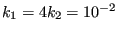
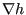
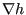
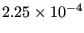
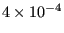

In this section, groundwater flow under a dam is analyzed. The geometry of the
dam is depicted in Figure 20 and is taken from exercise 30 in
Chapter 1 of [27]. All length measurements are in feet (0.3048 m). The
water level upstream of the dam is 20 feet high, on the downstream side it is
5 feet high. The soil underneath the dam is anisotropic. Upstream the
permeability is
characterized by
 cms, downstream we have
 cms. Our primary interest is the
hydraulic gradient, i.e.  since this is a measure whether or
not piping will occur. Piping means that the soil is being carried away by the
groundwater flow (usually at the downstream side) and constitutes an instable
condition. As a rule of thumb, piping will occur if the hydraulic gradient is
about unity.
cms. Our primary interest is the
hydraulic gradient, i.e.  since this is a measure whether or
not piping will occur. Piping means that the soil is being carried away by the
groundwater flow (usually at the downstream side) and constitutes an instable
condition. As a rule of thumb, piping will occur if the hydraulic gradient is
about unity.
From Section 6.9.14 we know that the equations governing stationary groundwater flow are the same as the heat equations. The equivalent quantity of the total head is the temperature and of the velocity it is the heat flow. For the finite element analysis SI units were taken, so feet was converted into meter. Furthermore, a vertical impermeable wall was assumed far upstream and far downstream (actually, 30 m upstream from the middle point of the dam and 30 m downstream).
Now, the boundary conditions are:
The input deck is summarized in Figure 21. The complete deck is part of the example problems. The problem is really two-dimensional and consequently qu8 elements were used for the mesh generation within CalculiX GraphiX. To obtain a higher resolution immediately adjacent to the dam a bias was used (the mesh can be seen in Figure 22).
At the start of the deck the nodes are defined and the topology of the elements. The qu8 element type in CalculiX GraphiX is by default translated by the send command into a S8 (shell) element in CalculiX CrunchiX. However, a plane element is here more appropriate. Since the calculation at stake is thermal and not mechanical, it is really immaterial whether one takes plane strain (CPE8) or plane stress (CPS8) elements. With the *ELSET keyword the element sets for the two different kinds of soil are defined. The nodes on which the constant total head is to be applied are defined by *NSET cards. The permeability of the soil corresponds to the heat conduction coefficient in a thermal analysis. Notice that the permeability is defined to be orthotropic, using the *CONDUCTIVITY,TYPE=ORTHO card. The values beneath this card are the permeability in x, y and z-direction (SI units: m/s). The value for the z-direction is actually immaterial, since no gradient is expected in that direction. The *SOLID SECTION card is used to assign the materials to the appropriate soil regions. The *INITIAL CONDITIONS card is not really needed, since the calculation is stationary, however, CalculiX CrunchiX formally needs it in a heat transfer calculation.
Within the step a *HEAT TRANSFER, STEADY STATE calculation is selected without any additional time step information. This means that the defaults for the step length (1) and initial increment size (1) will be taken. With the *BOUNDARY cards the total head upstream and downstream is defined (11 is the temperature degree of freedom). Finally, the *NODE PRINT, *NODE FILE and *EL FILE cards are used to define the output: NT is the temperature, or, equivalently, the total head (Figure 22) , and HFL is the heat flux, or, equivalently, the groundwater flow velocity (y-component in Figure 23).
Since the permeability upstream is high, the total head gradient is small. The converse is true downstream. The flow velocity is especially important downstream. There it reaches values up to  m/s (the red spot in Figure 23), which corresponds to a hydraulic gradient of about 0.56, since the permeability in y-direction downstream is  m/s. This is smaller than 1, so no piping will occur. Notice that the velocity is naturally highest immediately next to the dam.
This example shows how seepage problems can be solved by using the heat transfer capabilities in CalculiX GraphiX. The same applies to any other phenomenon governed by a Laplace-type equation.